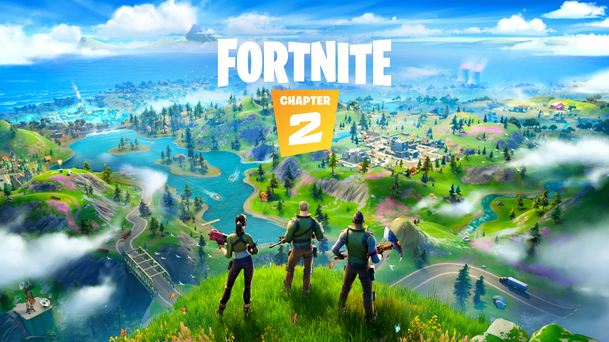

Beginnings
Fortnite was initially released in early access on September 26, 2017, for Windows, macOS, PlayStation 4, and Xbox One, followed by ports for iOS, Android, and Nintendo Switch the following year. Initially a PvE game, the Battle Royale mode took the gaming world by storm. As the game expanded and updated throughout time, the unexpected lore of Fortnite began.
Chapter 1
Chapter 1 was the first chapter of Fortnite and had a massive story, and over the course of the Chapter, new cosmetics, vehicles and locations were added. Chapter 1 consisted of 10 whole seasons with lots of new things added as well as many things getting removed. Large events such as a meteor appearence, rocket launch, and winter storms ensued. The season came to an insane end as the island was swallowed by a black hole, and Fortntie became unavailable for a few days.
Chapter 2
Coming out of the black hole, Chapter 2 was a rebirth for the game - for better of for worse. We entered a new map, a new Battle Pass system, and the beginning of wholesale changes to the game.
Chapter 3
This chapter of Fortnite began after the Island was completly flipped over, creating a whole new world for players to explore. Skins such as Spider-Man were available in this season. How cool! This is the current chapter of Fortnite.